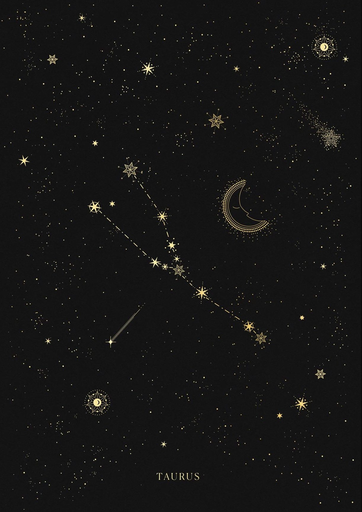
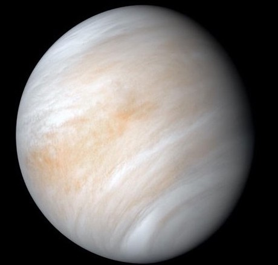

your sun is in...
Taurus

"The Bull"

Characteristics of a Taurus
* ambitious
* stubborn
* realistic
* devoted
* reliable
* loyal
* ambitious
* stubborn
* realistic
* devoted
* reliable
* loyal
Sun Signs
Just as the sun is the center point of our solar system, the sun signs represent the center aspects of a person. Your sun sign is one of twelve zodiacs that is based on the position of the earth in relation to the sun on the day you were born. Because the sun has the strongest pull on the earth, sun signs influence people the most. Therefore, your sun sign can tell you the core characteristics of who you are. Astrologists say this sign signifies how you express yourself to the world.

Element - Earth
Each sign is represented by one of four elements: Fire, Earth, Air, or Water. The elements represent a ruling quality that the three signs within this element all share.
Taurus Celebrities
Cher
Born: May 20th, 1946

John Cena
Born: April 23rd, 1977

Adele
Born: May 5th, 1988
The Rock
Born: May 2nd, 1972
Travis Scott
Born: April 30th, 1991
Ruling Planet:

Venus rules love, balance, and beauty
The ruling planet of a sign determines many of its associated character traits. Venus is the planet of love, which not only determines how we love, but what we love. For Tauruses, they value what and who they love above everything else, making them extremely generous and loyal. Often times, Tauruses also develop a love for the finer things in life, from dining to fashion to the arts. Above all, Tauruses desire comfort and routine.
The Sign's Quality:
A sign's quality correlates strongly to their relation to the seasons. The fixed signs all fall under the middle of the seasons, making them often known as the stabilizers who act as the middle grounds. For Tauruses, this can often promote confidence and even stubborness in their personality. And because they are the fixed earth sign, their groundedness and self-assurance are highly prominent in their behavior.
Fixed
pisces are falsely stereotyped as
extremely stubborn
when in reality they are persistent and self-assured
listen to your daily horoscope on spotify